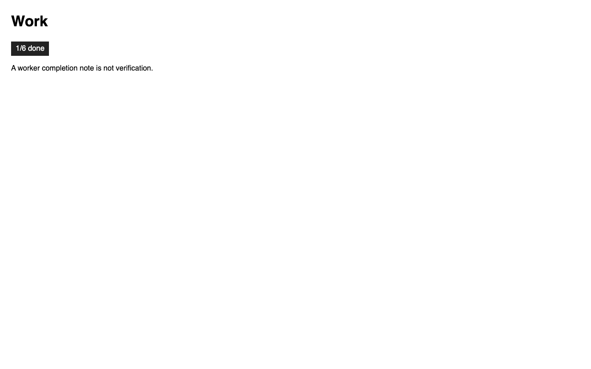

annotated-screenshot
selector
.done-chip
file:///Users/kavana/Downloads/atman/.worktrees/cursor-verify-t1026/tests/fixtures/t1026/state.html · 2026-09-15T07:45:37Z
fixture: worker completion is not verification

counted as 1/6 done